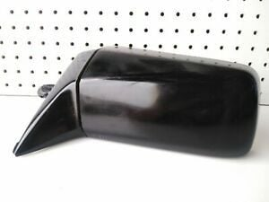
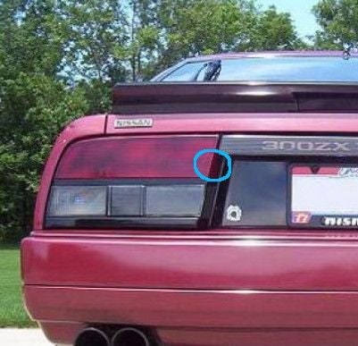
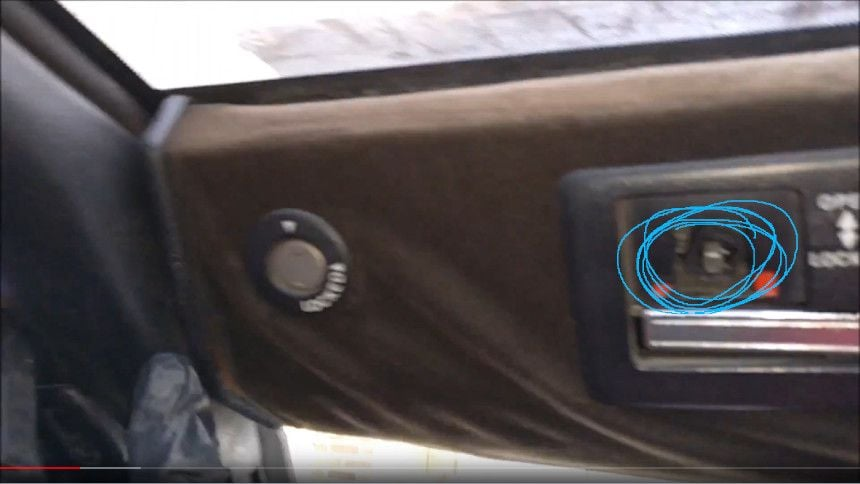

-
Greetings !
I'm a proud French owner of a 84 Z31
She's a little worn out by time, and a few parts are missing.
I was looking for them online, but I can't find the name of 3 of them (or where to find the part). I know the Zstore, but I haven't managed to find them there.
The first is the side mirror shell (housing?) for the left side. The whole mirror is functional, even the movement, but the shell is broken. I haven't managed to find just that black part, and the whole mirror is expensive and hard to replace…

The second is the tail light cover (is the name right?) This little part is broken and I'd like to replace it. I've found some whole tail light on Ebay, but nothing trusty or that looked official…

The last one is this one, the lock knob of the T roof. I don't know what to look for name-wise ! (sorry for the picture quality, it's the little plastic knob you push up or down to unlock it)

Thanks in advance for your replies ! I hope I have been precise enough.
I wish you a wonderful day.
PS : The car in the pictures is not mine !
-
Welcome to the forum!
Depending on your location (France i would assume?) If shipping from Australia is less expensive for you, I have had great luck with Ebay Australia.
Shipping to the US from Australia is expensive, but they sometimes have hard-to-find JDM parts.
There is also www.300zxpartsforyou.com, but as of today he has closed temporarily for a family emergency.
There is also a pretty active buy/sell facebook group you can join:
https://www.facebook.com/groups/106031256230490/

84 AE/Shiro #683/Shiro #820/84 Turbo -
Originally posted by Z_Karma View Post
Thanks a lot for your reply and your welcome !
I've been looking through ebay.com and now ebay.au !
The parts look good, but I can't find the mirror housing at all.
I've found a taillight housing, but not in great condition :/
For the last part, I still don't know what to search for ! I think the websites such as Zstore would have it, but I don't know what term to search…
I've joined the facebook club, awesome thanks again ! -
If needed, those tail lights can be disassembled and the lenses replaced as an individual lense, instead of replacing the entire housing.
( I had a damaged brake lens, like yours, but the replacements i bought had good lens but a broken housing so i had to remove the good lens from the broken housing and transplant it to my good housing.
If you wrap the housings in a towel and bake them in an oven at low temperature, about 93c (200F) until the adhesive that holds the lenses in place starts to soften.
You can pry them off and then use a seam sealer to glue the new lenses in place.
Parts like that last one, the T-top release and the mirror housing, are broken easily and are not normally found in restoration retail stores yet, our cars aren't old enough to be classics yet
Stuff like that is best found from other owners, like on the facebook group or here, that are parting out cars.
84 AE/Shiro #683/Shiro #820/84 Turbo-
 #4.1Nazha commentedI didn't know that about the lenses ! That might come in REALLY handy, so thanks a lot !
#4.1Nazha commentedI didn't know that about the lenses ! That might come in REALLY handy, so thanks a lot !
The lenses-baking is also a nice secret to share, I'll keep that in mind
I've posted the same search on the facebook post.
Worst case scenario, maybe I'll end up repalcing the whole tailight.
Same with the mirror, I've found the whole mounted mirror to change, but the changing bit can be costy (I'm way not instructed enough to do it alone)
Or maybe I'll remove them both (the mirrors) and install fender-mounted mirrors :P
-
-
Welcome! Was the car originally sold in Europe or is it imported from the US? The side mirrors (and many other things) are different on US cars. Tail light lenses and t-top knobs should be identical.
We also have a facebook group for European Z31 owners https://www.facebook.com/groups/762522337237171/ and there's one for the UK https://www.facebook.com/groups/1266023726745381/
You may want to try asking for side mirrors there. You would get the right one and it should be cheaper to send. -
Thanks for the welcomeOriginally posted by kaur View Post
If I'm not mistaken the car is a US import because 2 seats turbo were not sold in France…
So I think I should be looking for a replacement mirror shell in the US market, especially if they are different!
I've joined the groups thanks again
-
That looks like a US market shell to me, but I honestly don't know what a euro shell looks like. I'm in process of repairing both of mine where they had chunks broken off of them.--------------
Legal stuff:
**Nissan Employee**
Any information shared is simply my own opinion and NOT the opinion of Nissan
not legal stuff:
'88 300ZX 2+2-- driving… just details left
'22 Q60RS-- I tell the wife it's hers…
'87 Chaparral bowrider-- the next project
'00 Corolla-- kids car.
'14 E-350-- Gotta haul those kids in something. -
You repair it yourself, or buying new shells ?Originally posted by mwolvinm View Post -
Repairing myself. The shells have chunks missing on them. I used a dremel to cut a slot in the plastic housing, then cut some metal flashing as a base material within the hole. The flashing was cut to go into the slot. Then bondo glass over that, sand/file to shape, then final body filler over top. I haven't finished the final body filler/sanding, but the part is flexible now and appears to be repaired.--------------
Legal stuff:
**Nissan Employee**
Any information shared is simply my own opinion and NOT the opinion of Nissan
not legal stuff:
'88 300ZX 2+2-- driving… just details left
'22 Q60RS-- I tell the wife it's hers…
'87 Chaparral bowrider-- the next project
'00 Corolla-- kids car.
'14 E-350-- Gotta haul those kids in something.Comment
-
Damn that looks really well done ! I guess I'll just cut a plastic piece to fit the missing chunck on mine to do the same… -
Let me preface by saying I'm NOT a body man. However, the reason I cut the slot is so the filler piece wouldn't fall out. I used the router attachment on the dremel to cut the slot without going on either side of the plastic. You have 2.2mm of thickness to work with. -
Okay I see, would you have a quick picture around just so I get the general idea on how to do it?
-
-
Not sure what the price would be for shipping but this website (Steve) is great and he has probably any part you could ever want
http://300zxpartsforyou.com/
-
Steve B has these mirror parts. And he is back at work from his emergency, but I think he might have gone out for vacation, per his website. he is good at getting parts for us and if he doens't have it he can usually get it.
Bon

Copyright © 2006–. All rights reserved. Privacy Policy
Comment